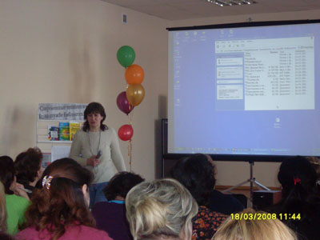
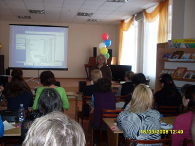

|
Семинар-тренинг «Современные технологии на службе библиотек»
Постоянно меняющееся общество требует освоения новых методик и технологий продвижения чтения. Семинары являются эффективными формами повышения квалификации.
Семинар-тренинг «Современные технологии на службе библиотек» был подготовлен для детских и школьных библиотекарей, в целях совершенствования библиотечно-библиографического обслуживания детского населения столицы и входил в программу фестиваля «Читающий город детства».
Участники семинара прослушали мастер-класс о применении аудио- и видеотехнологий в библиотечной деятельности для более полного раскрытия темы массовых мероприятий для детей.
За последнее время появилась эффективная форма массовой и индивидуальной работы с детьми – электронная презентация. На семинаре-тренинге библиотекари осваивали создание презентаций в Microsoft Office PowerPoint 2003, изучали редактора звуковых файлов Audacity 1.3, программы для захвата и обработки видео VirtualDub.
Для достижения комфортности, качества обслуживания, привлечения в библиотеки современного читателя библиотекари осваивают инновационные формы работы. Такой инновацией для Централизованной системы детских библиотек стало создание электронной книжной выставки в режиме Non stop. Создала выставку заведующая сетором эстетического воспитания отдела обслуживания ЦГДБ Ермакова С.Г. Выставка «На сцене я могу вызвать любую эпоху» посвящена творчеству народного поэта Башкортостана М.Карима. На семинаре Ермакова С.Г. показала мастер-класс по созданию таких выставок.
В завершении семинара, специалисты отдела автоматизации ЦГДБ ответили на вопросы участников семинара-тренинга.
 |
 |
| Другие фото | |
{kind=link}
{kind=link}